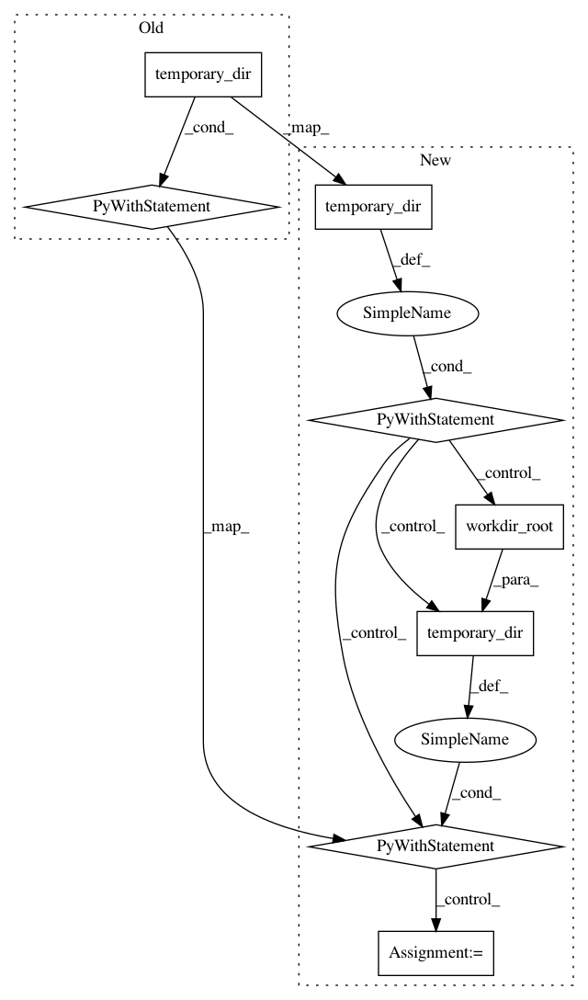

9ffe5262909ad9521e8cdf2beffd6e86330bd3bc,tests/python/pants_test/backend/jvm/tasks/jvm_compile/base_compile_integration_test.py,BaseCompileIT,do_test_compile,#BaseCompileIT#Any#Any#Any#Any#Any#Any#,18
Before Change
By default, runs twice to shake out errors related to noops.
with temporary_dir(root_dir=self.workdir_root()) as workdir:
for i in xrange(0, iterations):
pants_run = self.run_test_compile(workdir, target, strategy, clean_all=(i == 0), extra_args=extra_args)
if expect_failure:
self.assert_failure(pants_run)
else:
self.assert_success(pants_run)
if expected_files:
to_find = set(expected_files)
found = defaultdict(set)
for root, _, files in os.walk(workdir):
for file in files:
if file in to_find:
found[file].add(os.path.join(root, file))
to_find.difference_update(found)
if not expect_failure:
self.assertEqual(set(), to_find,
"Failed to find the following compiled files: {}".format(to_find))
yield found
def run_test_compile(self, workdir, target, strategy, clean_all=False, extra_args=None):
args = [
"compile",
"--compile-apt-strategy={}".format(strategy),
After Change
By default, runs twice to shake out errors related to noops.
with temporary_dir(root_dir=self.workdir_root()) as workdir:
with temporary_dir(root_dir=self.workdir_root()) as cachedir:
for i in xrange(0, iterations):
pants_run = self.run_test_compile(workdir, cachedir, target,
strategy, clean_all=(i == 0),
extra_args=extra_args)
if expect_failure:
self.assert_failure(pants_run)
else:
self.assert_success(pants_run)
found = defaultdict(set)
if expected_files:
to_find = set(expected_files)
for root, _, files in os.walk(workdir):
for file in files:
if file in to_find:
found[file].add(os.path.join(root, file))
to_find.difference_update(found)
if not expect_failure:
self.assertEqual(set(), to_find,
"Failed to find the following compiled files: {}".format(to_find))
yield found
def run_test_compile(self, workdir, cachedir, target, strategy, clean_all=False, extra_args=None):
In pattern: SUPERPATTERN
Frequency: 3
Non-data size: 8
Instances
Project Name: pantsbuild/pants
Commit Name: 9ffe5262909ad9521e8cdf2beffd6e86330bd3bc
Time: 2015-07-20
Author: stuhood@gmail.com
File Name: tests/python/pants_test/backend/jvm/tasks/jvm_compile/base_compile_integration_test.py
Class Name: BaseCompileIT
Method Name: do_test_compile
Project Name: pantsbuild/pants
Commit Name: 9ffe5262909ad9521e8cdf2beffd6e86330bd3bc
Time: 2015-07-20
Author: stuhood@gmail.com
File Name: tests/python/pants_test/backend/jvm/tasks/jvm_compile/java/test_java_zinc_compile_integration.py
Class Name: JvmExamplesCompileIntegrationTest
Method Name: test_in_process
Project Name: pantsbuild/pants
Commit Name: 9ffe5262909ad9521e8cdf2beffd6e86330bd3bc
Time: 2015-07-20
Author: stuhood@gmail.com
File Name: tests/python/pants_test/backend/jvm/tasks/jvm_compile/java/test_java_zinc_compile_integration.py
Class Name: JvmExamplesCompileIntegrationTest
Method Name: test_log_level